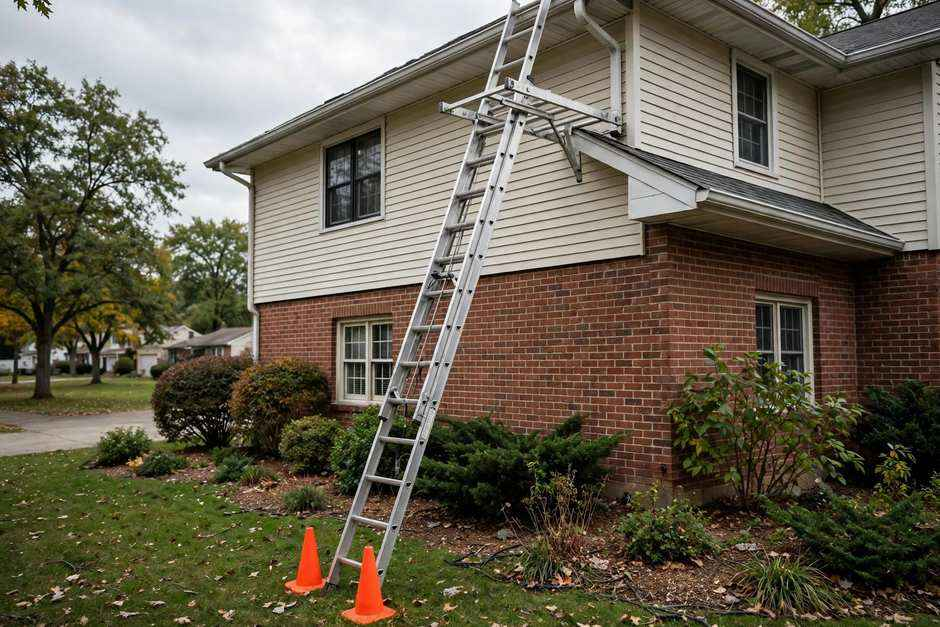
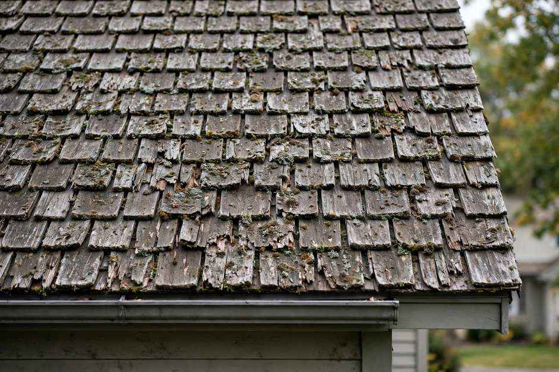
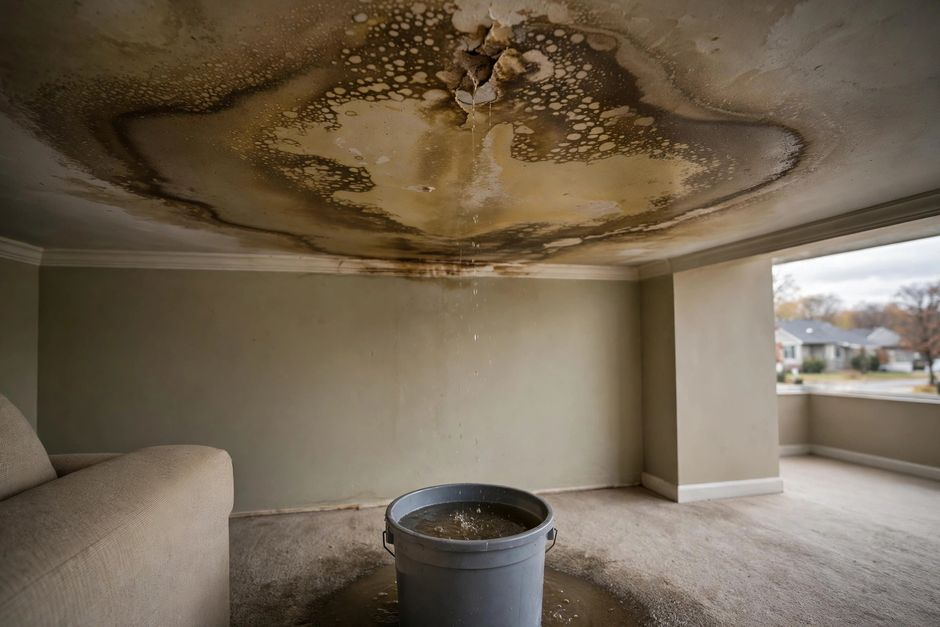

Loose or backed-out fasteners
On exposed-fastener roofs, screws can back out as the roof moves with temperature, opening a route for water. Ask how fastener condition is checked and what maintenance the system implies.
Metal roofing Des Plaines IL homeowners consider is usually a standing seam or exposed-fastener panel system, chosen for a longer service life than asphalt and weighed against a higher upfront cost. This page explains the two main system types, how metal behaves in Des Plaines weather, and what guides say about lifespan and cost — with no system presented as offered until scope is confirmed when you call (224) 802-4866.
Call (224) 802-4866 during business hours and describe what you are seeing. Hours: Mon–Tue 7:30 AM–7:00 PM, Wed–Fri 7:30 AM–7:30 PM, Sat 8:30 AM–5:00 PM, Sun closed.
Call Now (224) 802-4866 → No online booking. No email. Phone calls only.
The main distinction in metal roofing is how panels are fastened. In a standing seam system, fasteners are concealed beneath raised seams, and the panels can move as temperatures change. In an exposed-fastener system, screws pass through the panels, which makes the system simpler and less expensive to install but puts the fasteners and their seals on the weather side of the roof. Guides treat the two as different products with different profiles, not as interchangeable versions of the same roof.
Metal is a minority share of Des Plaines-area roofing compared with asphalt, and no share figure is published, so this page makes no claim about how common it is. What guides do say is that metal sheds snow, handles hail and wind exposure, and carries guide lifespans of 40–70 years in most guides — attributed figures, not promises. If you are comparing metal with a like-for-like asphalt job, the roof replacement page sets out the wider decision. Roof shapes and deck conditions vary from house to house, including in Orchard Place and the Oakton corridor sector, and the existing deck and roof shape matter as much as the material chosen.
Metal roofing is a longer decision cycle than a repair. These are the topics guides return to, and the questions worth asking before any scope is agreed.
Concealed fasteners, raised seams, and room for thermal movement. Guides describe standing seam as the premium metal profile, with specialist installation. Confirm whether this system is within scope when you call.
Screws through the panels, a simpler install, and fasteners exposed to weather. Guides give this profile an honest budget and utility role and warn against presenting it as equivalent to standing seam.
Guides describe metal as shedding snow and handling hail and wind exposure well. Those are general properties discussed in guides, not promises for any particular roof. Ask how the system would be detailed at eaves, valleys and penetrations.
Most guides cite 40–70 years for metal roofing, with one NW-suburbs guide citing 30–50+ years. These are guide figures with wide spreads, never promises. Ask what determines where a particular roof would fall.
Metal repair is specialist work, and this page makes no repair-capability claim. If an existing metal roof is leaking, ask specifically whether metal repair is within scope when you call, rather than assuming it.
Call (224) 802-4866 and describe the existing roof, its age, and why metal is under consideration. Ask whether metal roofing is within scope, which system types are discussed, and what the next step would be.
The roof shape, pitch, deck condition and penetrations shape what is realistic. Ask what the visit covers and how findings about the deck and structure are shared with you.
Ask for findings and an estimate in writing, describing the system type in general terms, the scope, and anything that would change the scope if the deck needs work. Compare it with the guide cost ranges on this page, which are not this business's prices.
Confirm the system type, the flashing and ventilation details, and what is included and excluded, in writing. Do not agree work on a verbal description of a system alone.
Ask how the finished work is checked, what you are shown when it is done, and what records you keep. Keep the written findings and estimate with the photographs.
These details come from general guidance about metal systems. None of them is a claim about a specific product, gauge, finish or profile being offered.
Metal expands and contracts with temperature. Standing seam systems allow for that movement; exposed-fastener systems manage it through the fasteners and seals. Ask how movement is handled in the system being discussed.
On exposed-fastener roofs, screws and their seals sit on the weather side and are a maintenance topic over time. On standing seam roofs, fasteners are concealed. Ask what maintenance each type implies.
Chimneys, vents and skylights interrupt the panel runs and need flashing details suited to metal. Ask how penetrations on your roof would be handled.
What goes under the panels matters, including ice-barrier underlayment at eaves and valleys, which Des Plaines requires. Ask how the underlayment layer is described in the written scope.
Guides describe metal as shedding snow. That is a general property, not a promise about ice dams, which are driven by attic heat as much as by the roof surface. See the attic ventilation page for the ice-dam mechanism.
Guides discuss impact resistance for metal, and some insurers discuss discounts for impact-resistant roofs. Any insurance question is for your insurer — ask them directly, and do not treat a guide statement as a promised discount.
An asphalt roof is near the end of its life, and the homeowner is weighing a like-for-like replacement against a longer-life metal system with a higher upfront cost.
Ask for both options described in writing, compare guide cost ranges with the written estimate, and confirm which metal system types are within scope.
An existing metal roof leaks at a penetration or a fastener line. The system type, its age and how it was fastened all shape what can be done.
Ask specifically whether metal repair is within scope. This page makes no repair-capability claim, and repair scope is confirmed when you call.
Part of the roof is low-slope, and the question is whether a metal profile suits that pitch at all, or whether a membrane system is the sensible option.
Ask how pitch affects the choice, and read the flat roof repair page for how low-slope sections are approached.
These are the problems general guidance associates with metal roofs. They are described here so you can recognise them and ask about them — not as a list of repairs offered.
Ask a pro →On exposed-fastener roofs, screws can back out as the roof moves with temperature, opening a route for water. Ask how fastener condition is checked and what maintenance the system implies.
Flashing around chimneys, vents and skylights is a leak point on any roof, and metal needs details suited to its movement. Ask how penetrations would be checked.
Metal sheds snow on steeper pitches, but low-slope sections and shaded eaves can still hold ice. Ice dams are an attic-heat problem as much as a surface problem; see the attic ventilation page.
Moisture can condense on the underside of panels where warm, moist air meets a cold surface. Ventilation and air sealing are part of that conversation; see the attic ventilation page.
“Patryk was great to work with and extremely professional. I highly recommend WP exteriors and plan on using them again in the future!”
Brian Avila Gaona5 months ago · Roof inspection · Google review
✓ Google review“Thank you Patrick for doing an amazing job. Great work me and my wife are very happy. Also thanks for being reliable.”
Phil Negron2 months ago · Gutter repairs · Google review
✓ Google review“I use WP Exteriors to repaint my roof and do as some tuckpointing on the exterior of my building. Pat and his team were very professional and communicative. They did a good job explaining what needs to be done to my home immediately and what I can plan for in the future. I will definitely be using them in the future.”
Patricia Murray2 months ago · Google review
✓ Google reviewMost guides cite 40 to 70 years for metal roofing, and one NW-suburbs guide cites 30 to 50+ years. These are attributed guide figures with wide spreads, not promises for any particular roof. The system type, the installation details and the maintenance the roof receives all affect where a roof falls in that range.
Third-party guides only, and not this business's prices: Modernize (Illinois, August 2026) gives $9 to $18 per square foot installed and $18,000 to $38,000 for a full install, while XL (2026) gives $11.00 to $17.50 per square foot for standing seam. Ranges conflict because methods, roof sizes and included scope differ. Ask for a written estimate for your roof.
Guides describe metal as shedding snow and handling hail and wind exposure well, which suits a climate with 38.4 inches of annual snowfall at O'Hare (1991-2020 normals). Those are general properties, not promises. Ice dams are driven by attic heat as well as the roof surface, so ventilation matters alongside the material.
Metal repair is specialist work, and this page makes no repair-capability claim. If an existing metal roof is leaking, ask specifically whether metal repair is within scope when you call (224) 802-4866, and describe the system type and where the leak appears.

Wood Shake RoofingCedar shakes, maintenance reality, and a composite comparison, with the removal code hook.Explore → Roof ReplacementFull tear-off and replacement, the code and climate angles for Des Plaines, and how repair and replacement compare.Explore →
Roof ReplacementFull tear-off and replacement, the code and climate angles for Des Plaines, and how repair and replacement compare.Explore → Roof RepairLeak repair, flashing and the repair-or-replace decision, explained for Des Plaines roofs.Explore →
Roof RepairLeak repair, flashing and the repair-or-replace decision, explained for Des Plaines roofs.Explore → Roof InspectionWhat an inspection covers, when one matters locally, and how findings are shared in writing.Explore →
Roof InspectionWhat an inspection covers, when one matters locally, and how findings are shared in writing.Explore → Flat Roof RepairLow-slope systems, seams, ponding and tie-ins, with repair-or-replace questions to ask.Explore →
Flat Roof RepairLow-slope systems, seams, ponding and tie-ins, with repair-or-replace questions to ask.Explore →
Emergency Roof RepairActive leaks and storm breaches: what stabilisation means, safety while waiting, and honest scope limits.Explore → Storm Damage Roof RepairHail and wind damage in one place: mechanisms, documentation, and the lawful contractor role.Explore →
Storm Damage Roof RepairHail and wind damage in one place: mechanisms, documentation, and the lawful contractor role.Explore → Insurance Claim HelpThe insurance claim process in general, lawful terms: roles, documentation and Illinois rules.Explore →
Insurance Claim HelpThe insurance claim process in general, lawful terms: roles, documentation and Illinois rules.Explore →Call (224) 802-4866 during business hours to talk about metal roofing and ask which system types are within scope. Hours: Mon–Tue 7:30 AM–7:00 PM, Wed–Fri 7:30 AM–7:30 PM, Sat 8:30 AM–5:00 PM, Sun closed.
Call (224) 802-4866 →Call (224) 802-4866 to talk about your roof. Describe what you are seeing — a leak, a stain, damage after a storm — and ask what help is available and what the next step would be. There is no online booking and no email contact. Hours: Mon–Tue 7:30 AM–7:00 PM, Wed–Fri 7:30 AM–7:30 PM, Sat 8:30 AM–5:00 PM, Sun closed. The office is at 638 Birchwood Ave, Des Plaines, IL 60018.